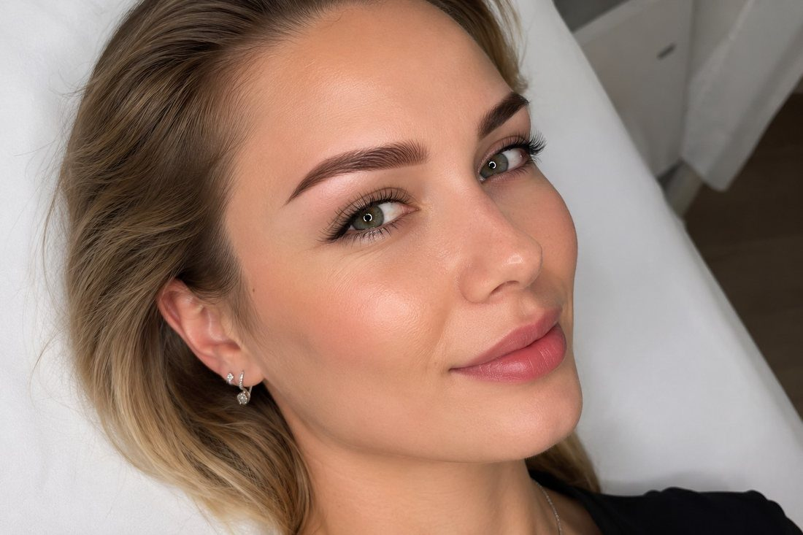

Sourcils
Fournis, graphiques ou aussi naturels que possible — nous choisirons la forme idéale selon les traits de votre visage.
- Technique poudrée — dégradé doux, effet ombré
- Technique ombrée — remplissage délicat, aspect naturel
- Technique poil à poil — dessin de poils individuels
- Microblading — traits très fins, réalisme maximal
à partir de 3 000 ₽
Prendre rendez-vous